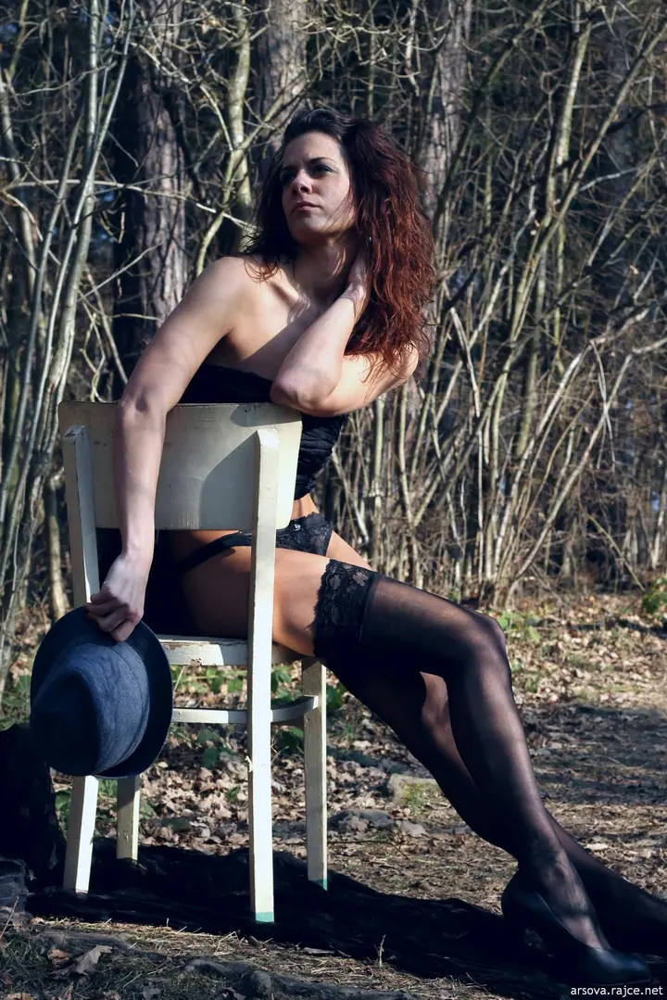
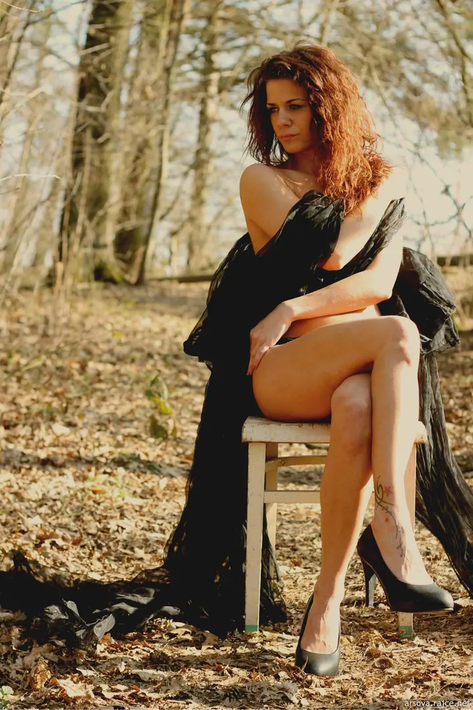

Nevšední portréty
Fotím venku i v interiéru, většinou trochu jinak, než jste zvyklí. Nápad i místo spolu probereme předem.

Fotografka nevšedních portrétů
Jmenuji se Tear Arsová a fotím nevšední portréty venku i v interiéru. Nejraději mám les, starou židli a kus černé látky, ale klidně vyfotím i ples nebo vás ve vaně. Na všem se dá domluvit.
Zeptat se na termín
Fotím venku i v interiéru, většinou trochu jinak, než jste zvyklí. Nápad i místo spolu probereme předem.
Krajka, punčochy, klobouk a odvaha. Fotím v lese, u vody nebo ve vaně, podle toho, co nám sedne.
Hledám dobrovolnice na focení venku v Jihočeském kraji. Portfolio vám nafotím zdarma, já pak můžu některé fotky použít k propagaci.
Fotím v Jihočeském kraji a nejvíc mě baví fotky, které nejsou úplně obyčejné. Často stačí židle uprostřed lesa, punčochy, klobouk nebo kus látky a z běžného odpoledne je malý příběh.
Sama o sobě říkám, že nabízím (ne)profesionální focení. Nemám ráda škrobenou atmosféru. Raději si s vámi napřed napíšu, co vás láká, a pak to společně zkusíme venku v přírodě nebo uvnitř.
Pořád hledám dobrovolnice na focení v exteriéru. Modelkám nafotím portfolio zdarma, já si pak můžu pár fotek nechat na ukázku své práce.
Pošlete mi e-mail a napište, o jaké focení máte zájem a co si představujete.
Domluvíme se, jestli půjdeme ven do přírody, nebo zůstaneme v interiéru, a co si vezmete na sebe.
Fotíme v klidu a bez spěchu. Pózy spolu ladíme, nemusíte mít žádné zkušenosti.
Vyberu a upravím nejlepší snímky a pošlu vám je. U spolupráce na portfoliu si některé nechám na ukázku.
Modelkám, které se přihlásí na focení v exteriéru, nafotím portfolio zdarma. Výměnou můžu některé fotky použít k propagaci.
V Jihočeském kraji, venku v přírodě i v interiéru. Místo vybereme spolu.
Pevný ceník nemám, na všem se dá domluvit. Napište mi, co si představujete, a domluvíme se.
Vůbec ne. Napovím vám, jak se postavit nebo posadit, a zbytek přijde sám.